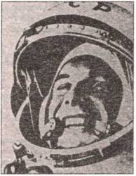

Первые полеты
Такая политика: у нас всегда и все в порядке, а неприятности могут быть только у американцев — привела и к тому, что и вокруг самого полета Гагарина было наверчено немало вранья. А сам доклад Юрия Алексеевича был засекречен и пролежал в ведомственных сейфах около 30 лет. А все потому, что первый космонавт Земли вместо бодряческого и, в общем-то, нужного лишь политикам доклада поступил, «как учили»: под магнитофонную запись подробно рассказал, что и как было на самом деле.
Итак, что же происходило на борту корабля «Восток» после того, как Гагарин произнес свое знаменитое «Поехали!..»?
ТАЙНЫЙ ДОКЛАД ГАГАРИНА. Накладки начались уже с закрытия входного люка. Когда за Гагариным закрутили все болты, выяснилось, что прокладки не «держат» герметичности. Пришлось снова открывать люк и повторить всю операцию заново. А время ведь шло…

Один из первых портретов космонавта № 1 Юрия Гагарина.
Тем не менее старт и выход на орбиту прошли нормально. Тряска, шум, перегрузки, вибрации — все было в пределах допустимого. Как сообщает сам космонавт, он, например, был готов услышать «гораздо больший шум».
Но вот когда корабль вышел на орбиту, неприятности посыпались, как из рога изобилия.
Были и мелкие — улетел куда-то плохо привязанный карандаш и стало нечем делать записи в бортжурнале. Не до конца перемогалась пленка в магнитофоне, и пришлось ее экономить.
Были и покрупнее — связь с Землей оказалась недостаточно устойчивой, то и дело пропадала. Корабль во время полета вращался вокруг продольной оси… Однако «мне сообщили, что корабль идет правильно, что орбита расчетная, что все системы работают нормально», свидетельствует Гагарин.
А вот тут, мягко выражаясь, Земля несколько слукавила. Согласно расчетам баллистиков, «Восток» вышел на слишком высокую орбиту — порядка 370 км. А тормозная двигательная установка (ТДУ) на «Востоках» была одна, не резервированная. Если бы она отказала, корабль при нормальной, расчетной траектории все равно должен был бы спуститься на Землю за счет аэродинамического торможения в верхних слоях атмосферы максимум через 12 суток. На этот срок и рассчитывались все запасы на борту. Однако, просчитав гагаринскую орбиту, баллистики схватились за головы — корабль мог остаться в космосе на 50 суток…
Однако, на счастье, ТДУ не подвела, сработала точно в течение запланированных 40 секунд. «В этот момент произошло следующее, — отмечает космонавт. — Как только выключилась ТДУ, произошел резкий толчок. Корабль начал вращаться вокруг своих осей с очень большой скоростью. Земля проходила у меня во „взоре“ сверху вниз и справа налево. Скорость вращения была градусов около 30 в секунду, не меньше. Получился „кордебалет“: голова — ноги, голова — ноги с очень большой скоростью вращения. Все кружилось. То вижу Африку (над Африкой произошло это), то горизонт, то небо. Только успевал закрываться от солнца, чтобы свет не попадал в глаза. Я поставил ноги к иллюминатору, но не закрыл шторки. Мне было интересно самому узнать, что происходит. Я ждал разделения. Разделения нет. Я знал, что по расчету это должно произойти через 10–12 секунд после выключения ТДУ. При включении ТДУ все огни на ПКРС (пульте контроля ракетных систем. — С.С.) погасли. По моим ощущениям, времени прошло гораздо больше, чем следовало, но разделения все не было…»
Произошло же вот что. После того как ТДУ выдала тормозной импульс, приборный отсек должен был отделиться от спускаемого аппарата. Он и отделился. Но не полностью. Плата с кабель-мачтой не отстрелилась. И приборный отсек, соединенный пучком кабелей со спускаемым аппаратом, поволокся за ним. Он отстал лишь после того, как провода перегорели из-за нагрева в атмосфере.
А в это время в кабине… «Прошло минуты две, а разделения по-прежнему нет. Доложил по каналу KB-связи, что ТДУ сработала нормально. Прикинул, что все-таки сяду нормально, так как тысяч шесть есть до Советского Союза да Советский Союз тысяч восемь будет. Шум поэтому не стал поднимать. По телефону доложил, что разделения не произошло. Я рассудил, что обстановка не аварийная. Ключом я передал команду „ВН4“, что означало „все нормально“».
Вот так, по-деловому оценивал обстановку человек, которому Земля, мягко сказать, доверяла не до конца. Не верила в его возможности. Иначе почему бы это кнопка ручного аварийного торможения была заблокирована специальным кодом? Правда, код был известен космонавту, дублировался запиской в специальном конверте. Ну а если бы он в волнении забыл все цифры, а конверт улетел подобно карандашу?…
Однако смелым все-таки везет. «Вдруг по краям шторки появился яркий багровый свет. Такой же багровый свет наблюдался и в маленькое отверстие в правом иллюминаторе. Я не знаю, откуда потрескивание шло: или конструкция потрескивала, расширяясь, или тепловая оболочка при нагреве, но слышно было потрескивание. Происходило одно потрескивание примерно в минуту. В общем, чувствовалось, что температура была высокая. Потом несколько слабее стал свет во „взоре“. Перегрузки были маленькие…
Затем начался плавный рост перегрузок. Колебания шара все время продолжались по всем осям. К моменту достижения максимальных перегрузок я наблюдал все время солнце. Оно попадало в кабину в отверстие иллюминатора люка 1 или в правый иллюминатор. По зайчикам я мог определить примерно, как вращается корабль.
К моменту максимальных перегрузок колебания корабля уменьшились до плюс-минус 15 градусов. К этому времени я чувствовал, что корабль идет с некоторым подрагиванием. В плотных слоях атмосферы он заметно тормозился. По моим ощущениям, перегрузка была за 10 g. Был такой момент, примерно секунды 2–3, когда у меня начали расплываться показания на приборах. В глазах стало немного сереть. Снова поднатужился, напрягся. Это помогло, все как бы стало на свое место. Этот пик перегрузок был непродолжительным. Затем начался спад перегрузок. Они падали плавно, но более быстро, чем нарастали… С этого момента внимание свое переключил на то, что скоро должно произойти катапультирование».
По программе космонавт должен был катапультироваться вместе со своим креслом на высоте около 7 тысяч метров и спускаться на собственном парашюте, отдельно от спускаемого аппарата. Но и тут, как уже говорилось, все было не слава богу. По существовавшим тогда правилам, рекорды ФАИ регистрировались, когда человек все время находился в летательном аппарате. А раз он катапультировался, значит, произошла авария. О каком рекорде тогда речь?
И вот на спортивного комиссара, по соображениям секретности, конечно же, гражданина СССР, было оказано столь мощное давление, что он не выдержал, вписал в протокол расплывчатую формулировку, из которой будто бы следовало, что Гагарин приземлился вместе с аппаратом.
А что, иначе подвиг Юрия Алексеевича потерял бы свое значение? Отнюдь… Нет, все-таки спортивного комиссара принудили пойти на подлог, по сути — на должностное преступление…
Да и самого Ю. А. Гагарина все-таки заставили соврать. Когда на послеполетной пресс-конференции он отвечал на вопросы журналистов, ответы ему готовили сидевшие за его спиной эксперты. Сама по себе такая подстраховка не таит в себе ничего особенного: человек в волнении может что-то забыть, а каких-то подробностей и вообще не знать…
Но в данном случае произошло вот что. Когда Гагарину задали вопрос, как он приземлился — вместе с кораблем или отдельно, на парашюте, он уже открыл рот, чтобы рассказать о катапультировании, как с удивлением увидел, что на поданной ему записке значится: «Приземлился вместе с кораблем». Как человек военный, дисциплинированный, Гагарин подчинился команде, ответил, как было указано.
Однако со временем обман раскрылся. Потом Гагарину всю оставшуюся жизнь на всех международных пресс-конференциях задавали этот злосчастный вопрос. И как бы он потом на него ни отвечал, его все равно уличали во лжи. В общем, пришлось Юрию Алексеевичу покраснеть за чужие грехи…
Я рассказываю об этой некрасивой истории столь подробно потому, что она весьма красноречиво иллюстрирует психологическую атмосферу, которая царствует в нашей космонавтике во многом и поныне. И это несмотря на то, что атмосфера умолчания, недомолвок уже не раз приводила к возникновению разного рода слухов, скандалов и прочих осложнений.
Впрочем, все это было гораздо позднее. В тот же момент Гагарин «вновь подумал о том, что сейчас будет катапультирование. Настроение было хорошее. Стало ясно, что я сажусь не на Дальнем Востоке, а где-то здесь, вблизи расчетного района.
Момент разделения заметил хорошо. Глобус остановился приблизительно на середине Средиземного моря. Значит, все нормально. Жду катапультирования. В это время, приблизительно на высоте 7 тысяч метров, происходит отстрел крышки. Хлопок, и крышка люка ушла. Я сижу и думаю, не я ли это катапультировался. Произошло это быстро, хорошо, мягко. Ничем я не стукнулся, ничего не ушиб, все нормально. Вылетел я с креслом. Дальше стрельнула пушка и ввелся в действие стабилизирующий парашют».
(В скобках заметим, что срабатывание дополнительного заряда и ввод стабилизирующего парашюта были необходимы для того, чтобы увести космонавта подальше от спускаемого аппарата, чтобы не перепутались парашюты, чтобы космонавта не придавило при приземлении.)
«На кресле я сидел очень удобно, как на стуле. Почувствовал, что меня вращает в правую сторону. Я сразу увидел большую реку. И подумал, что это Волга. Больше других таких рек в этом районе нет. Потом смотрю — что-то вроде города. На одном берегу большой город, на другом значительный. Думаю, что-то знакомое.
Катапультирование, по моим расчетам, произошло над берегом. Ну, думаю, очевидно, сейчас ветерок меня потащит и придется приводняться… Потом отцепляется стабилизирующий парашют и вводится в действие основной парашют. Происходило все это очень мягко, так что я ничего почти не заметил. Кресло также незаметно ушло вниз.
Я стал спускаться на основном парашюте. Опять меня развернуло к Волге. Проходя парашютную подготовку, мы прыгали много раз вот над этим местом. Много летали там. Я увидел железную дорогу, железнодорожный мост через реку и длинную косу, которая далеко в Волгу вдается. Я подумал о том, что здесь, наверное, Саратов. Приземляюсь я в Саратове.
Затем раскрылся запасной парашют. Раскрылся и повис. Так он и не открылся. Произошло только открытие ранца.
Я уселся поплотнее и стал ждать отделения НАЗа (носимого аварийного запаса. — С.С.). Слышал, как дернулся прибор шпильки. Открылся НАЗ и полетел вниз. Через подвесную систему я ощутил сильный рывок, и все. Я понял, что НАЗ пошел вниз самостоятельно.
Вниз я смотреть не мог, чтобы определить место, куда он падал. В скафандре это сделать нельзя…
Тут слой облачков был. В облачке подуло немножко, и раскрылся второй парашют. Дальше я спускался на двух парашютах».
Концовку этой истории вы наверняка помните. Ю. А. Гагарин приземлился на вспаханном поле неподалеку от Саратова. Его окружила группа колхозников. Потом подоспела машина с военными. Они сказали, что по радио идет передача о космическом полете. И старший лейтенант, в мгновение ока оказавшийся майором, стал известен всему миру…
Ну а теперь скажите, что в том докладе такого уж страшного? А также попробуйте догадаться, почему его столь долгое время хранили под семью замками… Лично мне из всего этого понятно лишь одно. Только в такой вот атмосфере, где правда легко заменяется ложью из «идейных соображений», и стало возможным возникновение разного рода слухов о том, что Гагарин был отнюдь не первым космонавтом Земли.
ВОЕННЫЕ АСПЕКТЫ ПЕРВЫХ ПОЛЕТОВ. Впрочем, плотную завесу секретности вокруг первых полетов развели не только по идеологическим соображениям. Лишь недавно стало известно, что военные вообще согласились на запуск кораблей-спутников только после того, как С. П. Королев смог сделать эту программу универсальной, а точнее — частью военно-космического проекта, предусматривавшего разведку с космических высот территории потенциального противника.
И первые корабли вообще были однотипными. Одно время даже название «Восток-1» носил вовсе не гагаринский корабль, а спутник фоторазведки. Пилотируемый же корабль в технической документации значился как «Восток-3КА». И только после полета произвели переименование: с корабля Гагарина сняли загадочные «3КА», а разведывательный спутник назвали «Зенит-2».
Согласно техническому заданию, такой аппарат должен был нести на борту фототехнику с объективом, имевшим фокусное расстояние около 1000 мм, что обеспечивало фиксирование на поверхности Земли даже таких сравнительно мелких объектов, как отдельные автомобили.
На борту также имелись телеаппаратура, позволяющая «сбрасывать» накопленную информацию по радиоканалу при пролете над территорией СССР, и подслушивающие устройства для ведения радиоразведки.
Кроме того, система управления пилотируемого корабля «Восток» обеспечивала его ориентацию только перед спуском. Для фотосъемки же требовалась постоянная ориентация аппарата объективом на Землю. Причем для съемки пришлось специально ставить особые иллюминаторы, прорезая для этого отверстия в крышке одного из двух технологических люков большого диаметра.
Даже такие общие агрегаты, как система кондиционирования на борту, пришлось для разведчика дорабатывать, поскольку сложные оптические системы еще более капризны к изменениям температуры, чем человеческий организм.
Ну, а вместо катапультируемого сиденья с космонавтом в кабине «Зенита» стоял комплекс спецаппаратуры, включавший в себя фотоаппарат СА-20 с фокусным расстоянием 1000 мм, фотоаппарат СА-10 с фокусным расстоянием 200 мм, фототелевизионную аппаратуру «Байкал» и аппаратуру «Куст-12М» для радиоразведки.
Масса космических аппаратов «Зенит-2» на этапе летно-конструкторских испытаний составляла от 4610 до 4760 килограммов. Серийные «Зениты» имели массу побольше — от 4700 до 4740 кг.
Летные испытания корабля-разведчика (термин «спутник-шпион» в нашей литературе относится лишь к американским аппаратам, да и появился он позднее) начались пуском 11 декабря 1961 года. Однако стартовавшая в тот день ракета-носитель «Восток» не смогла вывести спутник на орбиту. На участке работы третьей ступени прогорели трубопроводы, ведущие от газогенератора к турбонасосному агрегату. И на 407-й секунде полета сработала система аварийного подрыва. Обломки ракеты и спутника упали в Якутии, в 100 км севернее города Вилюйска.
Впервые советский разведывательный спутник типа «Зенит-2» вышел на орбиту 26 апреля 1962 года. К тому времени все советские военные спутники стали прикрывать нейтральным названием «Космос», поэтому и этот фоторазведчик получил наименование «Космос-4».
Но и тут не все получилось идеально. Уже в ходе орбитального полета стал травить клапан дренажа, из-за чего газ в баллонах высокого давления кончился раньше срока. Перестали работать микродвигатели основной системы ориентации, и спускаемый аппарат пришлось возвращать на землю всего через 3 суток после старта. Большая часть отснятых кадров пошла в брак.
Потом дело постепенно наладилось. Всего в рамках летных испытаний было проведено 13 запусков космических аппаратов «Зенит-2», лишь три из которых закончились аварией. Поэтому, начиная с «изделия 14», спутники фоторазведки пошли в серийное производство, которое было организовано в городе Куйбышеве (ныне — Самаре).
Производством таких аппаратов в Самаре занимается Центральное специализированное конструкторское бюро (ЦСКБ), которое по сей день является ведущей организацией по созданию космических аппаратов оптического наблюдения в интересах как военных, так и гражданских ведомств.
Однако из-за того, что устройство спутников фоторазведки «Зенит-2» долгое время оставалось государственной тайной, засекречены заодно и данные первых космических кораблей «Восток». Только после того, как в 1968 году аппараты «Зенит-2» были заменены более совершенными фоторазведчиками «Зенит-2М», мир смог наконец увидеть, как выглядел космический корабль, на котором Юрий Гагарин проторил человечеству дорогу к звездам.